Chapter 12: Auralization
A u r a l i z a t i o n
255
EASE 4.3 User’s Guide & Tutorial
Chapter 12: Auralization
Auralization is the process of converting the acoustic and electro-acoustic data generated by EASE into an audio signal that can be heard and evaluated. It adds subjective listening to the evaluation process.
EARS is a Binaural Auralization program that take into account both the acoustical properties of the room and the hearing characteristics of the human head. Binaural auralizations are inherently more realistic than Monaural auralizations, since Monaural auralizations do not take the characteristics of human hearing into account.
EARS offers both “Off Line” and “On Line” (Real Time) auralizations.
"Off Line" binaural auralization signals are produced "Off Line" and then stored for later replay or listening. Since these files are quite large, these auralizations are usually limited to relatively short "sound bites" that are replayed again and again. Eighteen to twenty second sound bites are typically used, but longer ones are possible.
“On Line” binaural auralizations use LAKE Convolution Filter software to produce the auralization signal in a continuous or "ongoing" man-ner that can be heard immediately in what amounts to "Real Time". Thus, they are usually referred to as RT auralizations. Since the aural-izations are heard in "Real Time" and not stored, there is no limit to their length.
Auralization is a step by step procedure that normally starts with a Reflectogram created by EASE and ends with the listening experience.
The steps are:
Step 1: Creating the Reflectogram. The Reflectogram represents the acoustical signature of the room at the point it was taken.
Step 2: Adding a Tail to the Reflectogram. The Tail extends the Reflectogram and adds realism to the auralization. Note that using AURA to develop the Reflectogram eliminates this step as it automatically adds a Tail to the Reflectogram.
Step 3: Combining the Reflectogram with the characteristics of human hearing. This creates the Binaural signal used in the final con-volution.
Step 4: The final convolution and listening experience.
Step 1: Creating the Reflectogram.
Since the Reflectogram is the foundation upon which the auralization is built, having a good one is essential to the production of accurate, realistic auralizations.
Note: AURA with its advanced algorithms and ability to take advantage of the reduced computing times offered by multi-core processors is highly recommended for anyone using EARS. It allows the creation of Reflectrograms with larger reflection orders and longer time windows than is possible with the Ray Tracing and Mirror Image algorithms used by EASE. AURA also automati-cally creates the “Tail”, eliminating the need for Step 2, Adding a Tail to the Reflectogram. AURA also allows the effects of Scat-tering to be included in the simulation; Ray Tracing and Mirror Image algorithms do not.
Ray Tracing Impact studies are the favorite of users who do not have AURA, since they produce satisfactory Reflectograms in less time than Mirror Image studies.
Mirror Image Impact studies produce more precise Reflectograms than Ray Tracing Impacts. However, the longer computation times re-quired by the Mirror Image method usually make its use impractical in large, complex rooms.
A normal tendency while creating Reflectograms is to think that the longer the Time Frame used, the better the results. This isn't necessar-ily true. It certainly isn't true if the Reflection Order is too low and many of the rays are cut off by the reflection count before they impact upon the counting balloon, or if an inadequate number of rays are emitted into the room to ensure a good study.
256
Chapter 12: Auralization
A factor to consider when choosing the Time Frame is that in most rooms statistical behavior of the reverberations takes over after 180 ms to 250 ms have elapsed. After this occurs, impacts generated statistically by adding a statistical "Tail" to the Reflectogram can be used.
Because of the calculation time involved, choose the location and number of Listener Seats with care. Using a large number of Listener Seats doesn't make sense unless each one is going to tell you something useful about the room. You want locations that will provide you with useful simulations.
Because every room is different, there are no hard and fast rules to generating good reflectograms. However, one way to tell when a questionable one has been created is the reflection density. As a general rule, the reflection density in a room increases with time. So, a decreasing density toward the end of the Reflectogram indi-cates either the number of Rays was insufficient or the Reflection Order was to low.
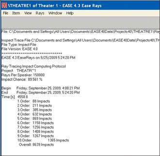
The Computing Protocol screen that appears at the end of the cal-culations is a good place to check this. Note that in our example the Reflection Order count appears to be leveling off at the end, a sign that more Rays or a higher Reflection Order should probably have been used.
A thinning (lower impact density) should not show up in the Reflec-togram when you view it using the Probe. If it does, you probably should rerun the Impact study with more Rays or a higher Reflec-tion Order
Additionally, and as we learned while studying Ray Tracing Impacts in Advanced Room Investigation, the Ray Tracing Control window
can also be used to tell when a questionable Reflectogram is being created. If you skipped this section of the Tutorial, please go back to the Advanced Room Investigation section and review the pages on Ray Tracing Impacts.
We’ll use the Reflectogram we created in our Ray Tracing Impact study under Advance Room Investigations for our Auralization exercise. To get started, open the Ray Tracing module, go to the Rays pull down menu, select View Impact File and then open the .mpc file we cre-ated. When the View Impact File dialog window opens, select Invoke Probe. Be patient, it may take the program a minute or two to de-velop the Reflectogram.

257
EASE 4.3 User’s Guide & Tutorial
Step 2. Adding a Tail to the Reflectogram (if needed)
Note: AURA users do not need to add a Tail if the Response File was created by AURA. AURA automatically adds the tail, including scat-tered diffuse and reverberant sound.
In normal rooms the diffuse sound decay starts not later than 250 to 300 msec after direct sound, so Reflection orders of 12 to 15 should be the maximun used and a statistical tail added to the reflectogram. Generally, there is no Reflection Order limitation in EASE 4.3 (orders of 50 or more are possible), only a memory question. The files can easily be 500 Mb or more and difficult to handle. They also take a long time to calculate. Accordingly, most users use shorter time frames and lower reflection orders and add a Tail.
There are two ways to add a Tail, Add Random Tail and Add Predicted Impacts.
Adding a Tail with Add Random Tail
Select Add Random Tail from the Edit pull down menu. This will introduce the Reverberant Tail setup screen shown below. It allows you to edit the Tail's characteristics. We'll be returning to this screen soon to explore its use. So, for now, just click on OK.
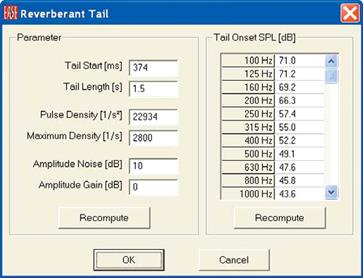
A typical result is shown below.
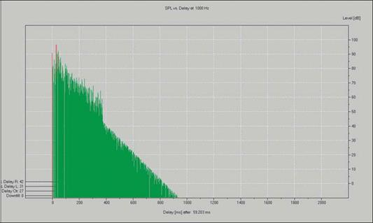
258
Chapter 12: Auralization
Notice that the Tail appears to be a little lower in level than the initial Reflectogram. The default parameters used to generate the Tail were based on an average of the last 10 impacts and usually needs to be changed.
To correct this, estimate how much lower the level is in dB. You can do this by using the Level scale on the right side of the Reflectogram or by repeatedly clicking in the Reflectogram on each side of the Tails junction with the original Reflectogram and using the dB readouts to estimate the level difference.
Then return to the Edit pull down menu and select Cut Random Tail to remove the Tail so you can add a new one.
Next, open the Edit pull down menu again and again select Add Random Tail. This will open the Reverberant Tail setup window again. Note that you can change the Tail's Start time, its Length, the Pulse Density, amplitude variations (Amplitude Noise) and Level (Amplitude Gain).
Most editing of the Tail is done visually, The object is to create a Tail that closely resembles the starting Reflectogram in density, in level and in individual pulse variations (spikes and peaks).
To see how this works, change the Amplitude Gain by 10 dB, click on OK or Recompute. EASE will then add a new Random Tail based on the new parameters. Now, use the Zoom feature to take a closer look at the pulses on both sides of the junction.
Please repeat the Cut Random Tail and Add Random Tail procedure until you are satisfied with the results. We ended with a Pulse Density of 30,000, a 10 dB Gain Increase and a 30 dB Amplitude Noise increase.
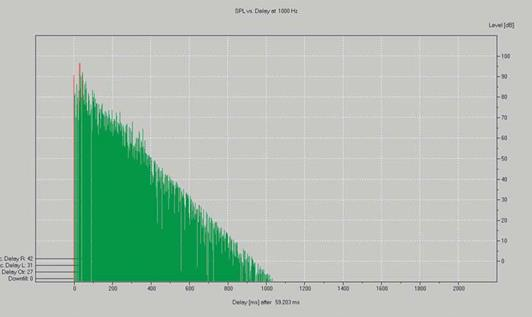
As the final step, take a look at the Reflectogram at several frequencies. What looks good at 1000 Hz may not look quite as good at 400 Hz or 4000 Hz. If this is the case, you may want to revise the Tail again to strike a compromise that looks best for all frequencies.
When you are satisfied you can either save the result as a Response File (a .rsp file) or go directly to the Auralization program and create a Binaural Impulse Response File (a .bir File). If you decide to save the edited Reflectogram as a Response File, open the File pull down menu, select Save Response File As and follow the prompts.
259
EASE 4.3 User’s Guide & Tutorial
Using Add Predicted Impacts
Add Predicted Impacts is another method of adding a random tail. This method analyzes the decay behavior of the initial Reflectogram and calculates values like Mirror Dimension, Impacts Present and Impacts Missing. It is usable ony for short time reflectograms limited in re-sponse time length.
Selecting Add Predicted Impacts from the Edit pull down menu introduces the set up screen shown below.
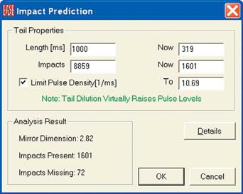
Note that you have the opportunity to enter a new response length, including the Tail, for the Reflectogram. Let's use 1000 ms.
EASE can calculate the new number of impacts in two ways, one with a limit to the Pulse Density and the other without a limit. We recom-mend the default setting which is Limit Pulse Density. The file size can be huge if the Pulse Density isn't limited.
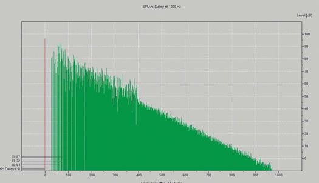
260
Chapter 12: Auralization
A good way to compare the two methods of generating a Reverberant Tail is to calculate the Schroeder RT plots for both methods.
Open the Options menu (hit F9) for the Probe and open the Schroeder tab. Accept the default settings and click on the Compute button.
Then activate Draw Schroeder Curve into Reflectogram and click on Apply or OK.
Schroeder plots for both the Random Tail and Predicted Impacts methods follow. The Random Tail plot is the one on top.
Note that there is a difference in the projected RT time.
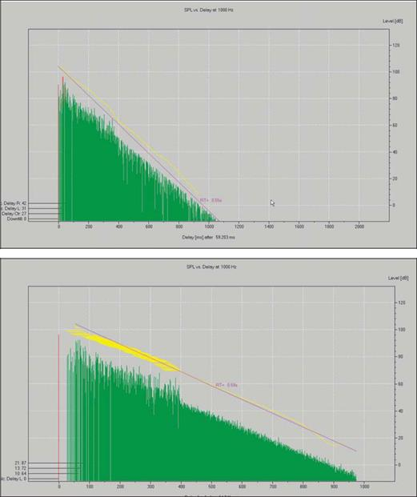
When you are satisfied you can either save the result as a Response File (a .rsp file) or go directly to the Auralization program and create a Binaural Impulse Response File (a .bir File). If you decide to save the edited Reflectogram as a Response File, open the File pull down menu, select Save Response File As and follow the prompts. Note that the File pull down menu also allows you to save the Reflectogram as a .bir File.
261
EASE 4.3 User’s Guide & Tutorial
Step 3. Combining the Reflectogram with the Characteristics of Human Hearing
To go direct to the Auralization program, open the Tools pull down menu and select Invoke EARS. The following prompt will appear.
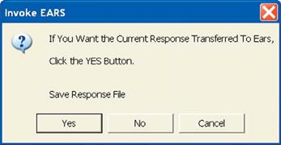
Answering Yes will open a new window asking you to name the Response File and designate its location. We suggest storing Response Files with all the other project data, so all the files are in one location.
Approving the name and location by hitting OK will bring up the Response File summary.
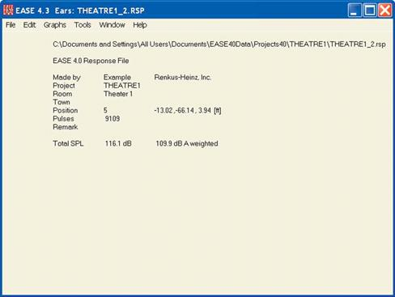
The next step is to create the Binaural Impulse Response File that will be used in the auralization. During this operation, the discrete pulses of the Monaural Response File will be convolved with the characteristics of the human head to create a Binaural Response File (.bir). FFT (Fast Fourier Transform) will be used for this. The convolution may take a minute ot two; exactly how long depends on the size of the Response File and the speed of your computer.
To start the process, select Make Binaural Response File from the Edit pull down menu.
This will open the Setup menu for the Binaural Impulse Response (.bir) convolution shown on the next page.
262
Chapter 12: Auralization
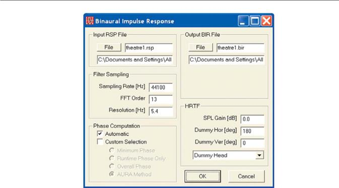
Your first step should be to review the File name and location set up for the Output BIR File. We suggest the same name and file location as the Input RSP. It's nice to have both in the same location.
This menu also gives you the opportunity to turn the Dummy Head and to choose the head Transfer Function (HRTF) that will be used.
Unless you have a specific reason to use one of the other heads, we suggest you use the one titled Dummy Head.
The convolution will start when you click on OK.
When the convolution is completed, a Show Filter Info prompt will appear. Answer Yes and the Show Filter Info window shown below will appear.
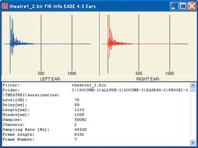
Note that separate Left and Right Ear files have been created.
263
EASE 4.3 User’s Guide & Tutorial
Step 4. The Final Convolution
Select Auralization from the EARS Module Tools pull down menu. This will open the EARS Convolver window..
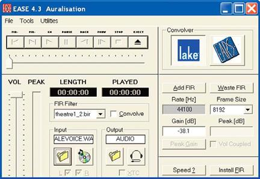
Note that the .bir (Binaural Impulse Response) file we just created was inserted into the FIR Filter (Finite Impulse Response) field. Directly below the FIR Filter section is the Input Control section. This section determines what signal will be used in the auralization. Clicking on the Disk icon selects the CD Player as the signal source; the File Folder icon allows you to browse to the dry audiosignal file you want to use in the auralization. The default signal is the Male Voice.wav file. If it doesn’t appear in the Input field, browse to it. You’ll find it stored in the Dry Input Signal Files folder under Ease40Data.
The Output Control section determines the output signal type that will be generated. Selecting the File Folder will save the signal as a .wav file for later playback; the Headset icon sends the auralization to your computer’s sound card for listening over stereo headsets or loud-speakers.
Before we go on, let's take another look at the Binaural Response File. Open the Tools pull down menu and select Show Filter Info Now to view the file. Note: If your screen looks different than the one above (the Convolver section on the right side isn't visible) and the Tools pull down menu isn't active press the Eject button. This will expand the window and activate the Tools pull down menu. Open it and select Show Filter Info Now. This will open the Binaural Impulse Response File. Use your left mouse button to double click on the graphic and view the frequency representation of the .bir File shown below. Notice the different characteristics.
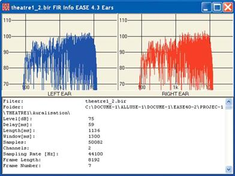
264
Chapter 12: Auralization
Close the Binaural Response File display and return to the EARS Convolver window. Note the large EARS and Lake Convolver buttons. These buttons determine the convolution method that will be used. The EARS button selects the “offline” method which creates a file that can be stored and replayed. The Lake button activates the “Online” or “Real Time” convolution method. Both methods use FFT (Fast Fourier Transform) for the convolution. The difference between the two methods is that the RT convolution is ongoing.
We’ll start with the Offline EARS method. Pressing the EARS button will select the EARS convolver (see below on the left).
The next step is to name the .Wav file that will be created by the convolution. Select the File icon under Output and insert the file name and storage location and then Save. Then press Eject and Go.
The convolution may take a little time, how much time depends upon the size of the Binaural Response File (.bir) and the length of the .wav file containing the dry audio signal. Then, EARS will automatically play the auralization for you and open the control window shown below on the right to make it easy for you to replay the auralization as many times as you want.
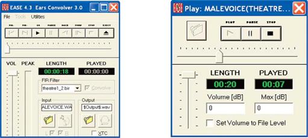
The vertical slide control adjusts the signal level being sent to your Sound Card (actually the Windows Audio Mixer). When Set Volume to File Level is activated, the program automatically adjusts the output signal level to the .WAV file level. This allows you to listen to level variations between auralizations made in different room locations.
The best way to listen to the Binaural auralizations produced by EASE is through a pair of good loudspeakers. Place them 2 to 3 feet apart and then sit directly in front of them at a listening angle of approximately 30 degrees. You want to be close to the loudspeakers to minimize the effect of the listening room.
The use of loudspeakers introduces a certain amount of loudspeaker "cross-talk" between the channels into the listening experience. This can be eliminated by activating the XTC feature using the XTC check box located under the Output section of the Ears Convolver window. This introduces the VMax Virtual Home Theater surround sound software into the playback. Try it. You'll hear the difference.
Note that the XTC feature is available only on EARS. It is not available on EARS RT.
Stereo headsets can be used, but they aren't recommended because of their well known loss of localization for on-axis signals. With stereo headsets, you are unable to distinguish between on-axis signals arriving from the front and rear.
265
EASE 4.3 User’s Guide & Tutorial
EARS Options
The Utility pull down menu in the Auralization window includes a number of useful options.
Keep To Auralize and Keep as Start Default are used to define the start up default settings. Keep to Auralize is used with the Auralize Direct Sound feature in Standard Mapping, Render Mapping, the Walker and the Probe. It sets up the convolver's input and output configurations. Keep as Start Default does the same for auraliza-tions that are initiated from the EARS program module.
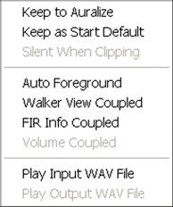
Silent When Clipping is used with Online (Real Time) auralizations to mute the out-put whenever the Lake convolver is driven into clipping. More about this later.
Auto Foreground keeps the Convolver window in the foreground during Real Time auralizations. Unless it is turned on, opening another window will mute the ongoing auralization.
Walker View Coupled ties the Walker's position and viewing angle together with the Filter file being used in the convolver. This assumes that the Eyes program module is open.
FIR Info Coupled connects the FIR Info Display and the active FIR together, so the Info Display will automatically show the current FIR filter characteristics.
Volume Coupled is used only with Real Time auralizations. It maintains the level relationships between auralizations made at different room locations.
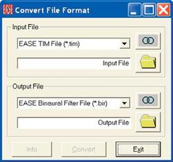
EARS also allows Wave files and measured TEF® and MLSSA® .wav files to be used in the auralization routine in place of the simulated EASE .bir files.
Return to the Main EARS Menu and select Convert File Format from the Edit pull down menu. This will open the Conversion dialog window.
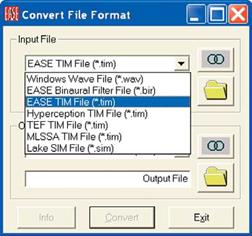
Clicking on the down arrow in the Input File section opens the File drop down se-lection list shown. Note the range of different file types that can be converted.
The Output File section of the Conversion window allows you to choose the type of File you want to create, usually a .bir Binaural Response File.
266
Chapter 12: Auralization
EARS also includes provisions for generating a wide variety of test signal that can be used as the Dry Sound in auralizations or mixed with other signals to add realism. Opening the EASE Tools pull down menu and selecting Generate Signal will bring up the Generate Signal window..
Note the wide range of choices. Pressing F9 will open an Options menu that further expands your choices
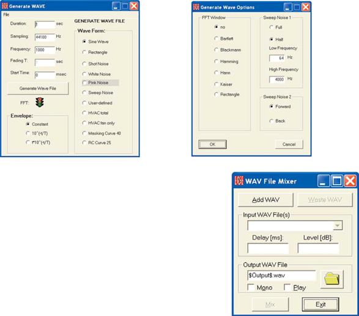
Signals generated within the Generate WAVE module as Wave files can then be mixed with other Wave files using the WAV File Mixer module found under the Tools pull down menu.
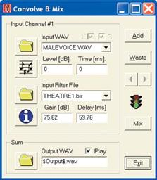
EARS also includes a Convolve and Mix option under the Tools pull down menu. Con-volve and Mix allows you to mix different or equal sound samples having different filter files (e.g. different orchestra instrument sources) to a summarized binaural file, which can be played as a complex orchestra sound.
267
EASE 4.3 User’s Guide & Tutorial
Before moving on to online (Real Time) auralizations, it should be noted that the EARS auralization program can be opened from the Main EASE menu without even opening a project. Opening the Calculations pull down menu and selecting Invoke EARS or double clicking on the Desktop Auralization icon will open the EARS program module. From there it is up to you to decide what you want to do.
Selecting Auralize File from the same Calculations pull down menu will take you directly to the auralization Convolver window. When the Convolver window opens you will notice that no file is loaded in the FIR Filter section. To load a .bir file (Binaural Impulse File), click on the Add FIR button and browse until you locate the one you want. Note that you can load any number of .bir files and then select between them. Use the arrow beside the FIR Filter field to open the file listing.
Real Time Auralization
Now it's time to use Real Time Auralization.
The first thing we need to do is set up the Lake Convolver. If the Convolver window is open, press the big blue Lake button. If the window is not open, press Eject to open it and then press the Lake button.
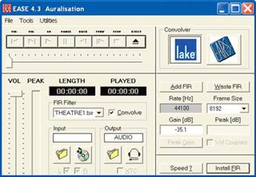
The first thing we need to do is to check out the Frame Size that can be used. It's a function of computer speed and memory. The smaller the Frame Size we use, the shorter the In/Out Latency (translate into convolution time or the time the Signal needs to pass through the convolver).
Press the Speed button at the bottom of the window. This will open the Convolver Speed window.
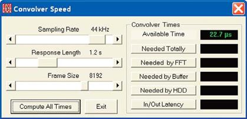
To test how small a Frame Size we can use, press the Compute All Times button.
268
Chapter 12: Auralization
At the conclusion of the calculation, the Time indicated in Needed Totally should be less than the Available Time listed. If the Needed Time is greater than the Available Time, a larger Frame Size will have to be used. If it’s smaller, a shorter time can probably be used.
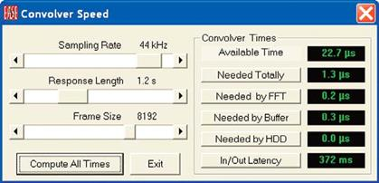
In our case, we can use a smaller Frame Size. Use the Frame Size arrows to select a smaller Frame Size and run Compute All Times again. Note that any yellow numbers that appear in the windows indicate the performance is marginal; any red numbers mean the setting is unusable.
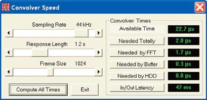
One word of caution; our experience is that Frame Sizes less than 1024 may lead to broken/chopped auralizations. As a result, Frame
Sizes smaller than 1024 are not recommended. Don't try to change the Sampling Rate and the Response Length. As a new user of EARS
consider them as being fixed.
.
When you have determined the proper Frame Size you want to use, press Exit.
EARS does not transfer this setting to the Convolver, so the next step is to select the correct Frame Size into the Convolver’s Frame field.
Use the drop down arrow.
Now make sure the Convolver Output is set up for Audio. If not, press the Headset icon in the Output section. The next step is to make sure the desired .bir (Binaural Impulse Response) filter or filters have been installed in the FIR folder. For our demonstration, we also want to install a Unity filter that will allow us to switch "on the fly" between an auralized signal and an unauralized one. This allows us to compare the two conditions. Open the Tools pull down menu and select Add Unity Filter.
We also suggest using the Silent When Clipping feature during the auralization. It eliminates any clipping noise from the playback by mut-ing the output signal. Open the Utilities pull down menu and click on Silent When Clipping.
Now, we can select the input source driver. Return to the Main EARS window and open the Tools pull down menu and select CD Player. Note that you have two choice. EARS selects its own player; Windows selects the Windows CD player. We will be using the Windows CD player, so select Windows. Note that instead of a CD player signal we could also have used a dry *.wav file.
269
EASE 4.3 User’s Guide & Tutorial
Now, we are ready to go. Start the CD player, if it hasn't already started, make sure Convolve is checked and then press Install Fir (trans-late into insert the filter). This will activate the Go button. Press it to start the convolution. The Played readout window will signal that the convolution has begun by starting to display the elapsed time.
At this point, signal levels and gain may not be set for optimum operation. The Lake convolver expects proper gain settings for all its Fil-ters. If the convolver gain setting are set too low, background noise can easily become a problem. The best signal to noise ratios are ob-tained when the gains are as high as possible. But, high gain settings introduce clipping.
EARS has the ability to determine the proper settings, but it cannot do this without actually doing at least a short convolution. Press the Stop and Eject buttons and then click on Peak Gain to inform the program you want it to adjust the gain. Then, check Silent When Clipping under the Utilities pull down menu.
Now, return to the auralization by clicking on Install Fir and then pressing Go. Initially you may hear nothing or a convoluted signal (you may have accidentally matched the correct settings) or a brief high noise level. In the last case, the Silent When Clipping option kicked in and eliminated the clipping noise.
In all cases it will take a few seconds, possibly as long as 30 seconds or more, for the program to determine the optimum settings based on the selected sample rate and needed frame size.. Then you’ll hear the noise disappear. Now press Stop and Eject again and then click on Peak Gain to adjust the gain to its correct level. Next, return to the auralization by clicking on Install Fir and then pressing Go. Listen to the convoluted (auralized) result. Please note that if higher peaks appear later on in the selection, the initial settings are no longer valid.
At this point you can save the gain settings by going to the Tools pull down menu and selecting Save FIR Gain. To do this you will have to stop the convolution and hit the Eject button. Selecting Save FIR Gain will store the proper gain settings with the FIR file and they will be called up automatically the next time you use this FIR file. One word of caution; the gain settings apply only to the CD you have been play-ing and to the track being played! If you change CD's or play a different track, you will need to repeat the process.
Note that the Tools pull down menu also includes a Save All FIR Gains command. This is used when you have a number of FIR files from different locations within a model and you want to set and save the gain settings that give you the best performance while maintaining rela-tive levels. You need to establish the gain settings for each FIR File and then activate Save all FIR Gains. The program will take it from there.
You can also manually adjust the Gain settings for the best performance by inserting Gain figures into the Convolver Gain field and adjust-ing the output level of your Windows Mixer. It takes a little experimenting, but it's usually not too hard to find a combination of settings that complement each other.
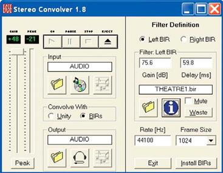
Real Time Stereo Convolver
EARS also includes a Real Time Stereo Convolver.
Both the normal EARS Convolver and the Lake convolution fil-ters produce binaural auralizations from a monaural input sig-nal. The Stereo Convolver produces a binaural auralization from a stereo input signal.
The R-System signal is used to produce a Right BIR and the L-System signal used for a Left BIR and both BIR's are used in the final convolution.
Notice that Stereo Convolver allows users to either save the convolution to their hard drive as a .Wav file or play it in real time.
270
Chapter 12: Auralization
Operation is quite simple. Select Stereo Convolver from the Tools pull down menu. When the Stereo Convolver screen opens, choose the Input signal (probably a stereo CD) and choose the Output signal (probably Audio). Next use the File icon in the Filter section to select the Right and Left BIR’s. Then press the Go button.
271